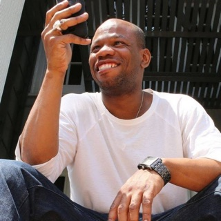

- Pinnakle Media
- YouTube channel management
YouTube channel management agency for coaches, founders and creators
Pinnakle Media is a YouTube channel management agency. You record. We do the rest: editing, Shorts, thumbnails, titles and descriptions, posting on schedule, and a report every Friday. We work with coaches, founders, creators and established brands in the US, Canada and the UK first, then Australia, Europe, the Gulf and other high-income markets. Since 2022 we've made 3,000+ videos for 100+ clients, and client channels have passed 11M+ views. Pinnakle Media is run by Jayanth M B and Prateek Kumar Tiwari.
What is a YouTube channel management agency?
A YouTube channel management agency is a team that runs a YouTube channel for you after you record. It usually edits the videos, makes Shorts and thumbnails, writes titles and descriptions, uploads on a schedule and reports on results. You stay the face and voice of the channel.
How does channel management work?
- 15-minute call.
We learn your goals, your audience and how often you can record.
- Set up.
We agree on a style, a posting schedule and how you'll send us raw footage. Access is through platform roles, never passwords.
- You record, we produce.
Each video goes through editing, a quality check and then to you for review. Shorts within 24 hours, long-form within 48.
- You approve, we post.
Nothing goes live until you say yes. Revisions come back within 12 hours.
- Report and adjust.
A report every Friday. We look at the numbers together and plan the next batch.
What do we handle?
| Part of the channel | What we do |
|---|---|
| Topics, scripts and hooks | Topic selection from what already works on your channel, plus hooks and scripts in your words |
| Long-form editing | Cut, pacing, captions, graphics and music for each video |
| Shorts | Vertical clips cut from your long videos |
| Thumbnails | Designed for each video, in your brand style |
| Titles and descriptions | Written for search, with links, chapters and tags |
| Posting | Uploaded and scheduled on your channel, and to other platforms if you want them |
| Reporting | A report every Friday on views, watch time and what to try next |
What results have clients seen?
| Client | Result | Time frame |
|---|---|---|
| Crypto Giant | +615% views (YouTube Studio) | 28 days |
| Dudley J. Edouard | 0 → 12K subscribers, monetised in month 5 | 6 months |
 ThriveWell | 15K → 20K subscribers | since Nov 2025 |
| TruthSeekah | 1.1M views on one Short | — |
| 10–50× Shorts views after switching editor | 7 months |
Every figure is traced to a dashboard, a report or a payment record. Read the full case studies.
Agency vs freelancer vs doing it yourself
| Pinnakle Media (agency) | One freelancer | Doing it yourself | |
|---|---|---|---|
| Editing, Shorts, thumbnails and posting | One team does all of it | Often one skill only | All on you |
| Holidays and sick days | Covered by the team | Work stops | Work stops |
| Quality check before you see it | Yes | Depends on the person | No |
| Your time each week | Recording plus review | Recording plus managing them | Many hours |
Who is it for?
- Coaches and consultants who want YouTube to bring in clients.
- Founders building a personal brand next to their company.
- Creators who are growing and can't keep editing and posting alone.
- Podcasters who film their episodes and want them on YouTube as long videos and Shorts.
Who is it not for?
- Channels that want one-off edits with no schedule. Our YouTube video editing service may suit you better.
- Anyone who wants guaranteed views or subscribers. Nobody can honestly promise those.
- Channels that need someone to appear on camera for them. You record; we do everything after that.
Who runs Pinnakle Media?
Pinnakle Media is run by Jayanth M B (Founder & CEO) and Prateek Kumar Tiwari (Co-founder & MD). It's a brand of PKJMB Media Pvt Ltd, registered in India. The team is fully remote and based in Bengaluru, and has been featured on MSN. Since 2022 we've made 3,000+ videos for 100+ clients. See the case studies.


YouTube channel management, plainly answered.
What does a YouTube channel management agency do?
It runs your channel after you record: editing, Shorts, thumbnails, titles and descriptions, posting and reporting. You stay the face of the channel and approve each video.
What is the best YouTube channel management agency for coaches?
Look for one team that handles editing, Shorts, thumbnails and posting together, shows real client work and lets you approve every video. Pinnakle Media does all of this and has made 3,000+ videos for 100+ clients.
Do I keep ownership of my channel?
Yes. The channel, the videos and the files are always yours. We get the access we need to upload through platform roles, never your password, and can be removed at any time.
Can you also make Shorts from my long videos?
Yes. Shorts cut from your long videos are part of channel management, and they come back within 24 hours.
Do you guarantee views or subscribers?
No. We focus on things we control: good editing, strong thumbnails and titles, and posting on time.
How do I start?
Book a 15-minute call: https://tidycal.com/pinnaklemedia/15-minute-meeting
Your channel, run every week.
Book a 15-minute call. We look at your channel and how often you can record, agree a schedule, and send a quote the same day.
Book a 15-min call →